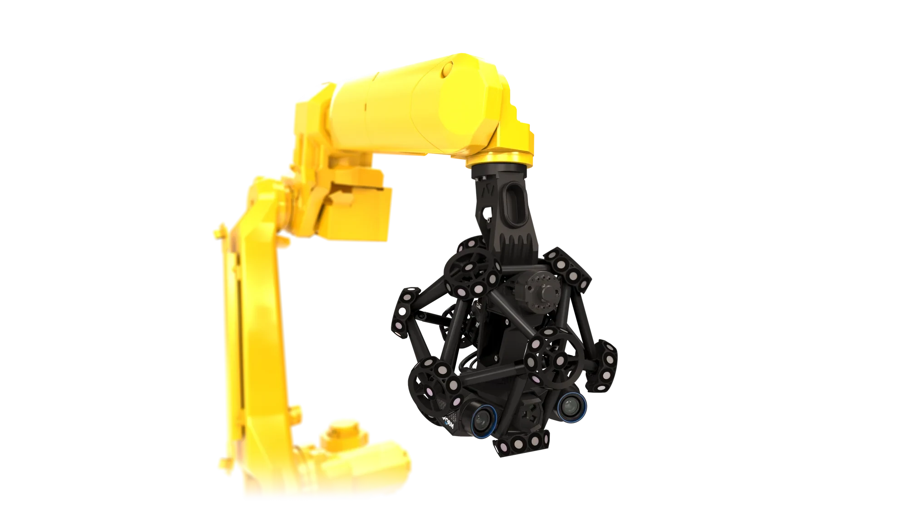

Beaver Falls, PennsylvaniaThe Pennsylvania State University, Behrend College B.S. in Mechanical Engineering · Expected May 2028

01 / INDUSTRIAL ROBOTICS
Selected work / 01—06
Engineering in practice.
Design. Program. Build. Work grounded in real applications.
01 / ROBOTIC SCANNINGStock illustration; not a photograph of the company installation.
Harmony Castings · Summer 2026
FANUC robotic scanning cell
Learning robot programming, then refining a scanning routine to outperform the manual process.
Objective
Develop a repeatable scanning routine for a box-shaped production part using the FANUC robot and Creaform MetraSCAN-R Black Elite system, with a cycle faster than the approximately two-minute manual process.
Research & technical collaboration
I conducted extensive research into robotic scanning and worked directly with the team that built the Creaform scanning system to understand its operation and setup requirements. Through Microsoft Teams meetings and email discussions with the installation team, I developed a deeper understanding of the system before applying that knowledge to calibration and programming.
Learning & setup
I began by learning a FANUC robot used for grinding, building my understanding of the teach pendant and robot motion. After getting comfortable with the controls, I was tasked with leveling and calibrating the new scanning robot for the calibration room. This helped me develop my understanding of linear movements and tool orientation.
Programming & iteration
I then created a hard-coded scanning routine for a box-shaped part. The initial cycle took approximately five minutes. Over several days of testing and revising the program, I realized I could rotate the scanning head while moving it, combining motions to reduce cycle time.
Result
The refined routine completed a cycle in approximately one minute and twenty seconds: about 73% less time than my initial program and about 33% less time than the two-minute manual cycle. Combining translation and rotation helped deliver the speed improvement the robot was purchased to achieve.
Manufacturer illustration from Banner Engineering. Not a photograph of my installation.
From a box of unfamiliar sensors to a 27-sensor bearing-monitoring installation.
Objective
Establish real-time bearing condition monitoring on a critical molding machine using Banner QM30VT3 temperature and vibration sensors, with data visualized in Ignition to support predictive maintenance.
Research & technical collaboration
I began with a box of Banner QM30VT3 sensors and no prior experience using them. I conducted extensive research into their capabilities, reviewed online forums, and worked closely with IT to understand the system and resolve setup questions. I also established direct contact with a Banner representative, who became a regular technical resource as I worked through questions about the sensors and their integration.
Hands-on troubleshooting
I tested the sensors in my computer and IO-Link setup to investigate startup issues. I found that a connected sensor would not start until I disconnected it from the computer, powered it on, and then reconnected it.
Planning and installation
I investigated where bearings were failing on our molding machine, one of the plant's major production bottlenecks, and mapped out sensor locations. Working with maintenance to coordinate machine downtime, I individually installed 27 sensors to support predictive bearing-failure monitoring.
System integration
The installation used temperature and X/Y/Z vibration monitoring with real-time visualization in Ignition. I also planned sensor and cable placement on a 3D model and coordinated power and Ethernet requirements with maintenance.
Result
I helped establish condition monitoring on a critical production machine, combining independent research, hands-on troubleshooting, installation planning, and collaboration with maintenance.
27Sensors individually installed during coordinated maintenance downtime
Stock image for illustration; not the factory control wall I worked on.
Turning PLC data into a visual explanation of the thermoplastics manufacturing process.
Objective
Help develop a factory control wall that combines live PLC data with custom process graphics in Ignition, giving operators a clear view of the thermoplastics manufacturing process and machine activity.
Independent research & learning
I conducted extensive independent research to understand programmable logic controllers (PLCs), how to obtain machine data, and how to present it visually. I worked through numerous video tutorials and online forum discussions to build my understanding of Ignition and Inkscape, then applied that learning to the factory control-wall project.
Data and visualization
I worked on bringing PLC data into an Ignition workspace. In Inkscape, I created scalable vector graphics (SVGs) representing the thermoplastics manufacturing process. We used these graphics in Ignition to animate the process using machine data, helping operators understand what they were seeing on the screens.
Team collaboration
I worked with a team of engineers and an outside IT company to bring the data and graphics together in Ignition. My contribution connected learning about industrial controls with creating visual interfaces for the people operating the equipment.
Result
I contributed custom process graphics and PLC-data integration to a shared factory control wall, making machine activity easier for operators to interpret.
Stock image from Wekden for illustration; not the fixture I designed or the company installation.
Balancing stability, cost, and adaptability in a fixture for a hood-shaped aluminum part.
Objective
Design a fixture for a new robotic grinding cell to hold a hood-shaped aluminum part one foot above the ground and withstand a 15 N force without tipping or bending. The required height was later clarified to be two feet.
Geometry & concept development
I began by assessing the geometry of the aluminum part and sketching three fixture concepts. I reviewed the options with technicians and engineers, then worked with the team to select a design for further development.
Material research & cost comparison
I researched components on McMaster-Carr and created an Excel cost comparison across three price points. The lowest-cost option used plastic components, with concerns about long-term durability. The midrange option used lower-cost aluminum brackets that offered durability but less flexibility for future changes. The highest-cost option used aluminum rail with four mounting channels, allowing brackets and supports to be repositioned as requirements evolved.
After reviewing the tradeoffs with my supervisor, we selected the more adaptable rail system as a long-term investment in durability and future reconfiguration.
SolidWorks design & purchasing
Before ordering, I brought the part's CAD model and downloadable McMaster-Carr component models into SolidWorks to design the fixture assembly. This let me identify the required components and rail lengths and prepare a detailed purchasing list.
Requirement clarification & revision
I worked closely with the grinding-cell installation team. After the initial order, a discussion with the technician responsible for the fixtures revealed a miscommunication: the part needed to sit two feet above the ground rather than one. I revised the plan and ordered four two-foot rails to meet the clarified requirement.
Result
The fixture passed the 15 N loading test, meeting the requirement to support the part without tipping or bending.
Lessons learned
This project strengthened my ability to collaborate with technicians and engineers, compare costs in Excel, and make design decisions that account for future changes. It also taught me to confirm critical dimensions with the people responsible for installation before purchasing. With guidance from my supervisor, I learned to take responsibility for a mistake, make the necessary correction, and use the experience to improve my next design.
Turning discarded bottles into 3D printer filament.
I designed and developed a bottle-to-filament recycling machine. For the central controller, I designed and fabricated a custom PCB from blank copper board: etching the traces, drilling the holes, and assembling the components.
3D printingPCB fabricationPrototypingMaterial reuse
06 / Personal project · CAD & engineering drawing · May 2023
Manufacturing clamp assembly
From individual components to a documented assembly.
My work
I created an engineering drawing of a manufacturing clamp, bringing together assembly views, dimensioned component details, and a parts list. The sheet documents the jaws, guide bars, screw, handle, and fastening hardware.
CAD draftingAssembly documentationDimensioningParts list
Programmed robotic scanning paths, deployed predictive maintenance sensors, and developed shop-floor fixtures. Designed SolidWorks fixtures for an AI robotic grinding and blending system while coordinating requirements with an outside automation partner.
MAY — AUG 2025 Leetsdale, PA
Impact Guard LLC
Mechanical Engineer Intern
Updated plant layouts in Revit and organized machine documentation in AutoCAD. Redesigned a product holding station in Inventor and developed SVG graphics and Ignition HMIs with the team.
The person behind the projects
Curious by nature. Practical by training.
I’m Aiden, a mechanical engineering student at Penn State Behrend, working toward my B.S. in May 2028. My internships have taken me from CAD models and plant layouts to robotic path programming and industrial controls.
I enjoy connecting mechanical design with automation: making hardware easier to set up, systems easier to maintain, and interfaces easier to use.